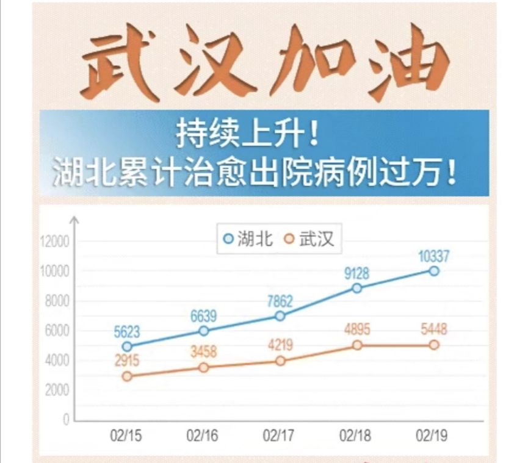
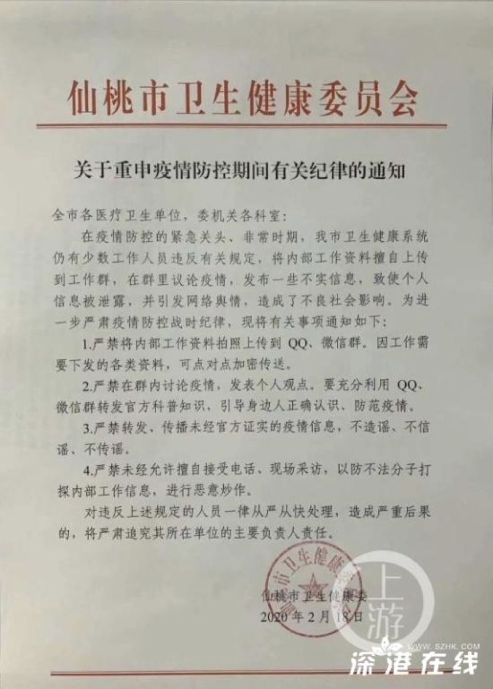
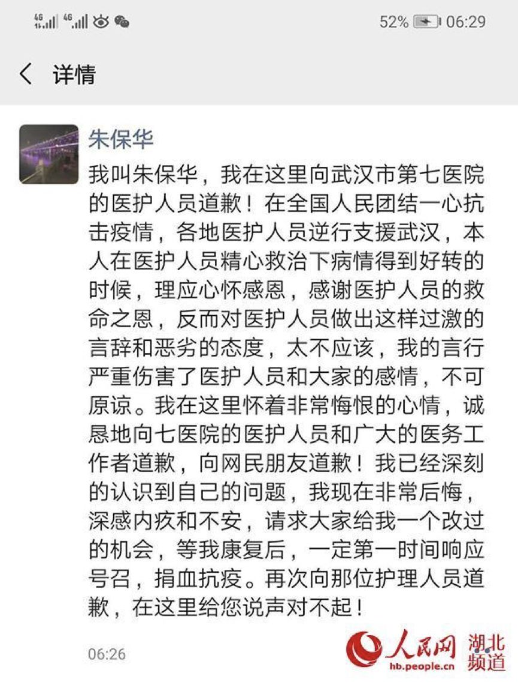

数说疫情0221：武汉疫情出现重要转折，战局由防守转为全面进攻
原文链接 备份链接 _ 武汉新增确诊病例和新增治愈病例今日跨过“黄金交叉”点，从此全国包括武汉在内将逐日加大释放以医院病床床位为核心的医疗资源。但也应注意到2月20日数据出现两个异常：一是非湖北地区新增病例出现巨大反弹；二是国家卫健委与湖 …
岛语

非常时期，武汉成了全国人民挂念、祈福的城市。封城后，武汉人民的真实生活是什么样？ 武汉在发生哪些变化？
正和岛自1月26日起特别推出“叶青专栏”。叶青是一位定居武汉40年的市民，也是一名学者和官员。在过往多期的专栏文章里，叶青实时记录了很多观察和亲历的事件，并提了很多建设性的建议，深受读者好评。
这将是一份宝贵的史料。感谢他，我们得以更真切地感知到武汉疫情全方面的进展。让我们一起为武汉加油！
*作者 | 叶青 正和岛蓝色岛邻*
排版 | 张珍珍 正和岛湖北岛丁
来源 | 正和岛APP
01
终结16连降
20日，正月二十七。周四。晴天。
为什么要写周四？是想找到一点上班的感觉。
每天忙忙碌碌，时间过得非常快。一周又要过去了。
可能有的人正好相反。
20日，全国新增确诊病例889例（湖北441，湖北外448，终结了“16连降”），新增死亡病例118例（湖北115例，浙江、重庆、云南各1例），新增疑似病例1614例。
截至20日，全国确诊病例54965例（其中重症病例11633例），累计治愈出院病例18264例，累计死亡病例2236例，累计报告确诊病例75465例，现有疑似病例5206例。
20日，湖北新增新冠肺炎确诊病例411例，其中：武汉市319例。
全省新增病亡115例，其中：武汉市99例。
截至20日，湖北省累计报告新冠肺炎确诊病例62442例，其中：武汉市45346例。
全省累计治愈出院11788例。其中：武汉市6214例。
19日的治愈数字如下：

全省累计病亡2144例，其中：武汉市1684例。
目前仍在院治疗42056例，其中：重症8979例、危重症2018例，均在定点医疗机构接受隔离治疗。
“不幸的”消息在20日中午12点19分传来，湖北新增确诊病例631例（武汉319例）。这一次武汉的数字不变，别的地方的数据变了。
一个多小时之后，湖北省卫健委有做出解释：目前，我省监狱没有接入传染病疫情网络报告系统，20日夜接到监狱部门手工报卡后，经认真审核确认，截至20日24时，监狱部门报告的271例新冠肺炎确诊病例中有 51例前期已纳入相关地区统计并公布，其余220例确诊病例和10例疑似病例现纳入2月20日疫情数据进行公布。
因此，全省新增确诊病例数由411例订正为631例，累计确诊病例数由62442例订正为62662例。
还有一个数字：至2月19日18时，外国公民在华确诊患新冠肺炎有29例，其中湖北10例，18人已经治愈出院，有2例死亡，9人正在接受隔离治疗。
此外，国家中医药管理局与国家卫健委共同向全国推广使用清肺排毒汤。10个省的临床救治观察证实，清肺排毒汤有良好的治疗效果，第六版诊疗方案已经将其作为通用方案推广。
这也是一个好消息。
02
指导组强大的指导力
这是建国以来的一场非常战役。
回归过去的近一个月，武汉事事都离不开中央指导组的指导。
20日下午4点，国务院新闻办在武汉再度举行发布会，介绍中央指导组已进驻湖北25天。让武汉人了解了中央指导组的“秘密”。
1月27日，大年初三，以孙春兰副总理为组长的中央指导组，抵达疫情的“风暴眼”武汉，主要职责有三项：一是督导湖北；二是指导湖北抗击疫情；三是督察职责。
实际上，孙春兰副总理在1月22日来到武汉时，就按照总书记的具体指示和要求，做了两个决定，即“封城”和延长假期。没有指导组，“封城”肯定会延后，后果不堪设想。
1月27日后武汉的疫情呈现出点状局部地区暴发和多点、多地大面积多发的情势，指导组从全国调来了8支由专家牵头的医疗队到武汉，集中了协和、同济、人民收集重症，而后建立火神山、雷神山医院救治重症患者，建设11家方舱医院，8000多位患者现在在方舱医院，建立400多个隔离点。
孙春兰副总理要求实行应收尽收，刻不容缓，指示全市开展拉网式排查，不落一户，不漏一人。但是，直到13日来了新市委书记才有效果。这是指导力与执行力的关系。有的人就是听不进去。
中央指导组成员丁向阳指出：这场突如其来的疫情是建国以来的一场非常战役。
没有想到发生在武汉。
为了打赢这场“非常战疫”，各项优惠政策向湖北倾斜。
人社部在免除湖北企业2-6月社保费之后，又提出企业社保免减缓三项措施。从2020年2月起，对中小微企业养老、失业、工伤保险三项社保的单位缴费实行免征，不超过5个月；湖北以外的大型企业等其他参保单位的三项社保单位缴费可减半征收，期限不超过3个月；生产经营出现严重困难的企业可申请缓缴，期限不超过6个月。
财政部做了测算：截至2019年底，全国企业职工基本养老保险基金累计结余近5万亿元。这次出台的阶段性减费政策预计养老金减收4714亿元，养老金可以确保按时足额发放。截至2019年底，中央层面已经完成四批81家中央企业和中央金融机构国有资本划转充实社保基金工作，划转国有资本1.3万亿元。
住建部明确：企业可按规定，申请在2020年6月30日前缓缴住房公积金，缓交不影响职工正常提取和申请住房公积金贷款。一线医护人员、疫情防控人员、因疫情隔离或暂时受疫情影响的职工等，在6月30日前公积金贷款不能正常还款的，不作逾期处理。
企业家要注意这些政策。而黄奇帆建议的取消住房公积金制度，新冠肺炎也未尝不是一种机会。
至于新冠肺炎疫情的经济影响，各个领域也做出了估算。
中国旅游研究院预计2020年一季度及全年，国内旅游人次分别负增长56%和15.5%，全年同比减少9.32亿人次；国内旅游收入分别负增长69%和20.6%，全年减收1.18万亿元。
这些预测，对于企业家的决策会有帮助。
03
接受监督、不胜不休
20日，人民日报《湖北周观察》发表文章：《不胜不休！怀菩萨心肠 施霹雳手段》。介绍应勇书记的一周。
文章反映了新书记一周的细节。我们浓缩一下。
国家卫健委批评湖北：防控措施没及时到位，全国要胜，湖北、武汉必不能败。
人民日报2月4日开通疫情救助通道，来自武汉的求救信息潮水般涌入。
电话中确诊或疑似病患求住院、求隔离的哭泣声，让人惊痛不已。即便在中央三令五申、几度划出死线，要求必须应收尽收后，无处求治的呼声仍在耳边。
这些在初期的微信中，视频不少。
导演常凯一家四口因为无法入院救治而相继病亡等悲剧，让许多网友泪奔。
据卫健委信息，武汉病患从发病到入院，平均需要9.84天，错失最佳救治时机。轻症拖成重症，畸高的病死率让人可怕。
到了18日、19日，志愿者群里偶尔会安静一两个小时，即便求助的，也往往是其他病症、其他诉求。
这是因为来了新的领导。
13日中午，一条36个字的中共中央决定刷屏：应勇同志任湖北省委委员、常委、书记，蒋超良同志不再担任湖北省委书记、常委、委员职务。
网上跟帖支持拥护，党心民意同频共振。
上海网友用一副对联赠别：掏心掏肺掏家底，捐钱捐物捐市长，横批：应勇抗疫。
最大的变化，就是四个字“救治”“阻隔”——打蛇终于打到七寸。
应勇到任后的第一个省委常委会，在作出“我省疫情正处在高位运行的持续增长期、攻坚克难最吃劲的关键期、重中之重决战之地的窗口期”判断后，要求“以更加强烈的紧迫感，更加严格的硬措施，精准发力”，“牢牢抓住救治、阻隔两大关键环节，实行筛查甄别、小区（村）封闭式管理、公共区域管控三个‘全覆盖’。”
这几个全覆盖，是抗疫之中的上海人非常熟悉的打法。想来新领导到了武汉，会对此前抗疫措施的松散，甚至远不及只有300多确诊病例的上海，会颇为吃惊。干脆把上海的有效做法拿来用上了。
在湖北，有人传说，新书记因为常凯一家的悲惨故事，难受得夜不能寐。还有人说，新书记专门去新媒体上看百姓的呼救与呼声……
新书记一周的忙就不要细说了。
单说17日，新书记又奔赴黄冈、孝感。特意提及“红安精神”：万众一心，紧跟党走，朴诚勇毅，不胜不休。
对不胜不休的由来，湖北人都很清楚。没有想到刚来一周的新书记也知道。
1931年11月7日，为纪念十月革命14周年，红4军、红25军合编为中国工农红军第四方面军，在湖北省红安县(原黄安)七里坪镇西门外河滩上召开成立大会。
1934年11月1日至9日，红四方面军在赤江县委驻地，即今四川省巴中市通江县毛浴镇召开了规模空前的党政工作会，到会代表800余人。将全军各部队军训时的训词进行了规范，统一为“智勇坚定，排难创新，团结奋斗，不胜不休”。
“创新”一词出现也让人吃惊。
我提了很多建议，有的建议不容易被接受，就要继续提。
公车改革建议，从1998年开始提。2014年7月16日接受推行。
模仿红四军训词，我对自己的要求是：“竭诚尽智，无错不改，不受不休”。
19日上午，应勇主持召开指挥部专题会议，研究部署疫情防控新闻舆论工作。
强调：“只有勇于接受监督，我们才不会懈怠；只有勇于接受批评，工作才能不断进取。”
其中讲了很到位的一句话：要继续开好新闻发布会，用好权威平台，及时准确发布信息，回应社会关切，决不能让真相还在穿鞋的时候，谣言已经满世界跑。
网上的东西，很大一部分是真的。
武汉曾经对8位“传谣者”予以训诫。仙桃也差一点重蹈覆辙。
19日，湖北省仙桃市卫生健康委发出的《关于重申疫情防控期间有关纪律的通知》。

《通知》强调了四点“严禁”要求，其中两点最易引发争议：严禁在群内讨论疫情，发表个人观点；严禁未经允许擅自接受电话、现场采访，以防不法分子打探内部工作信息、进行恶意炒作。
对此，仙桃市卫健委负责人回应称，《通知》文字表述确有不当之处，已作废。已召开紧急会议，检视不足。
最近，关于“菜”的问题又引起了涉及到鄂州的舆情。
市场上菜贵，外省捐赠的蔬菜烂在仓库，而警嫂在微信上晒派出所发的蔬菜、水果。
已经有“大意失荆州”（荆州一干部子弟从天门找关系回荆州）了，不要再“失鄂州”。要认真调查、及时处理。
网上舆情不回应的话，会越来越大。韩红慈善会经过调查，不就把事情说清楚了吗。
20日晚，鄂州市新型冠状病毒感染肺炎疫情防控指挥部宣传组作出了回应。
2月14日，贵州省安顺市为支持鄂州抗疫，无偿援助共计14台车各类物资160吨，其中蔬菜135.72吨。该批捐赠物资于15日凌晨到达鄂州博恒仓库。
经实地核查，该仓库出现烂菜堆情况的原因如下：
一是因长途运输，14日晚安顺市所捐赠蔬菜经过28小时到达鄂州，因路途遥远和气候原因致部分蔬菜出现变质；
二是蔬菜到达鄂州市博恒公司仓库后，在卸货过程中发现其中1车蔬菜没有包装，散堆在集装箱中，且因长时间闷压，产生了变质。
说清楚就行。
近日，朱征夫等22名全国政协委员提了一个提案：
（1）将武汉市宣布封城的1月23日确定为抗疫纪念日，纪念新冠疫情的死难者；
（2）在武汉市树立纪念碑，刻上所有死难者的名字；
（3）对抗疫过程进行总结，对贡献突出的单位和个人进行国家表彰；
（4）根据国务院《烈士褒扬条例》的规定，将在抗疫斗争中牺牲的医护人员、公务人员和其他在抗疫过程作出贡献的人评定为烈士，家属享受抚恤待遇，事迹供人们瞻仰学习；
（5）在武汉市建立抗疫纪念馆，宣传在抗击疫情过程中涌现出来的英雄事迹。
网民一片叫好声，并建议应该调查疫情爆发真象，严肃追究失责人员，标上历史的耻辱柱！
20日晚，网传武汉市第七医院患者无端训斥医护人员的视频。
湖北省市场监管局在核实该患者为该局后勤服务中心筹备组副组长朱保华后，连夜召开党组会，决定对朱保华停职检查，根据调查情况进行严肃处理。
21日早，朱保华在自己的微信朋友圈中发出了道歉声明。

不为自己辩解，态度比“退休副厅长”好。
事情发生了，道歉是最后一根救命的稻草。
04
湖北3月10日后复工
20日，湖北省疫情防控指挥部发通知，要求切实做好疫情防控期间特殊困难群体帮扶和养老机构等特殊场所管理工作。对低保对象、特困人员、重度残疾人、孤儿、留守老人、留守儿童等特殊困难群体，按照城市人员不低于500元、农村人员不低于300元的标准，给予生活物资救助。
20日，湖北省第三次发出推迟开工的通知（前两次是4日、14日复工）：省内各类企业先按不早于3月10日24时前复工。
即便如此，也还有20天。
其实，随着战疫时间的延续，困难的人会越来越多。
20日深夜，我收到一条微博：
湖北省企业不得早于3月10号复工。武汉市情况最严重，估计复工时间更要往后推，从1月底封城到3月底左右复工，再到上班发工资，这中间最少接近3个月没有收入，这对多少个供房家庭有深深的影响可见不少。在此个人希望此问题可以引起政府相关部门的关注。
我与一位教授在微信上交流，在武汉的900万人中，可能有一半是“手动口动族”，就是工作了才有饭吃。没有工作就没有饭吃。就是我以前说的“日光族”。
确实，改革开放40年还没有遇到过一座城市被“冷冻”1-2个月的而完全没有工作岗位的。
办法有三个：
一是建议慈善机构、爱心企业做简单“爱心盒饭”，维持他们的最低生活水平。就像以前的庙宇“施粥”。
二是采用中国最古老的赈灾办法：“以工代赈”。给志愿者发高额补贴，不叫工资。在保证安全的前提下，让低收入者参与到自愿服务中。
三是银行或者信用社提供低息、免息的生活性贷款。特别是有单位的人员，可以提供一定的担保。相当于提前预支工资。
“宅”在家里怎么办？有人提出两个事情。
一是重启晚安短信项目。中国日报新媒体和新世相一起，发起晚安短信湖北计划：
请身在湖北的人，与全国陌生人交换晚安。
如果你此时身在湖北，填写你的手机号，报名加入后，从下周一（2月24日）起，每晚 10：00，你都会收到 一条晚安短信。
直至封城结束，疫情好转。
二是微博平台上#在家理发大赛#的话题，已经被阅读了1.1亿次，而#没有Tony老师（名理发师的代称）的日子#话题，也已经被阅读了近1700万次。网友们纷纷晒出自己给自己、家人甚至宠物理发的成果。
在这场“在家理发大赛”中，理发器可能默默成为了大赢家。
19日，拼多多平台发布“宅家十大热销商品”榜单，“理发器”、“口红”、“家用乒乓球训练器”“睡衣”“吃鸡神器”等十件商品上榜——其中，理发器是第一名。
05
终于关闭隔离点了
20日起，武汉市实行“双测温两报告”制度。居家人员每日两次（上午、下午各一次）测量体温，超过37.3℃必须立即如实向社区（村）报告，有工作单位的人员还应同时向所在单位报告。
三天的拉网式排查已经结束。但是，在20日凌晨居然有网友给我发微信，说他们小区几号楼还有发热病人。
我连忙往微信小程序国务院客户端上报告。
20日，武汉最早开辟的集中隔离点——光谷潮漫大酒店，送走最后一位解除隔离者后暂时关闭。
1月31日，接区指挥部指令，光谷潮漫大酒店被辟为“区级新冠肺炎疑似病例集中隔离点”，第二天就要启动。
这也是武汉最早开辟的集中隔离点，最高峰时曾同时隔离了198位疑似病例，截止目前，累计隔离281人，171人转诊定点医院，93人转诊方舱医院，16人解除隔离回家。
一篇报道描述了隔离点的故事。大家可以从中了解到武汉基层干部的辛劳。
第一批病人2月1日凌晨入住，负责登记、引领的都是医疗人员，吃喝拉撒睡都是社区干部管。第三日就连夜组装采样室。
光谷4位基层护士挺身而出，来到隔离点经消毒的活动板房内，直面疑似病患，开展咽拭子标本采集工作。
2月8日，中南民族大学校医院护士杨茉作为医护志愿者，进入潮漫酒店隔离点，参与护士轮班，每天负责病人转进、转出。
2月10日，光谷建设派来8个精干的小伙子，连夜做分区隔断。
2月12日，党员突击队开始配送物资到包括潮漫在内的各个隔离点。
送走最后一位解除隔离者后，光谷潮漫酒店隔离点正在消杀腾空，等待排查病患入住。
截至20日，武汉市八家方舱医院已累计有616位患者康复，最快治愈时间为4天。
06
想吃大馒头
18日，在武汉的山东大学第二医院援助湖北国家医疗队获赠一批山东运送来的大馒头等食品。
这是由山东省粮食和物资储备局“齐鲁粮油”公共品牌等单位发起公益活动，三辆满载着章丘大馒头、德州挂面、蒙山羊肉、平度水饺、沂源苹果等食品的货车，分别抵达湖北黄冈和武汉，为山东医疗队队员送来了家乡的味道。
18日下午，湖北咸丰县朝阳寺镇罾沟村四组的微信群里，几位常年在外务工的村民看到周边农户为疫情防控捐赠蔬菜，想尽一份心意，却没有菜园子，一拍即合要捐头猪。30余户村民捐款，总金额8000多元。
19日一大早，发起人就联系村里的养殖户李正友，购买一头肥猪，连同余款购买的1000斤大米、26桶食用油送到咸丰县中医医院和县机关事务服务中心指定的餐馆。
20日，武汉共征用了长江海外游轮旅游公司的“蓝鲸”，宜昌江腾游轮有限公司的“仙娜”“皇家花苑”“皇家盛世”“皇家星光”，宜昌降基旅运有限公司的“长江孚泰”“长江孚泰2号”等7艘三峡游轮，作为援汉医疗队的住宿服务点，床位达1469张。
20日，湖北省文化和旅游厅宣布：统一制作“灵秀湖北感恩卡”，在抗疫结束前发放到各医疗队。援鄂医疗队员凭卡可携带亲属一名，5年内不限次免门票游览省内A级旅游景区，自疫情结束后景区恢复正常运营至2024年12月31日。“灵秀湖北感恩卡”主要活动对象为援鄂医疗队员，包括国家、军队及各省医疗队所有队员，以及湖北省所有医护人员。
湖北省医护人员凭有效证件（医师证或护士证）可以不限次免门票游览省内A级旅游景区，时间2年，自疫情结束后景区恢复正常运营至2021年12月31日。
至2月18日，共组派277支医疗队、33759名医务人员驰援湖北。
免费旅游，这是一个小礼物。最早提出者是英山四季花海的马格胜董事长。
20日，两辆大货车满载着40吨蔬菜，从昆明国家高新区出发，48小时里跨越四省，驰援东湖风景区的方舱医院及部分隔离点。
满载山东省沂水县人民捐赠的300吨酒精的10辆大货车，停在黄陂区武湖萃元冷链食品物流园大门口。
湖北5个中转站半月累计接收各地捐赠的蔬菜、医疗器械、酒精等应急物资超过1500吨。武汉居中的优势帮了大忙。承接四方的援助。
20日，美年健康援鄂医疗队派出首批白衣“战士”200人抵达武汉。这是被纳入国家统一救援计划的民营专业医疗队，医护比例为1:4，女性比例占80%，来自于全国43个城市。
民营企业这是第一家。她们也是“逆行者”。
07
小结
数字虽然纠结，搞清楚就好。
回顾中央指导组的工作，武汉人会默默地感恩。
指导组+强执行力的领导，才是绝配。
终于有了一个隔离点的关闭，无疑是好消息。

到了像救人一样去救企业的时候了！
正和岛作为一个企业家帮助企业家、危难之际互相雪中送炭的平台，2月15日到3月底推出一个特殊政策：只要是有人推荐、具备登岛资格的企业家朋友，确认后可直接享受岛邻或金海客的相关服务价值，登岛费用可以到3个月后度过这段危机时再考虑。
也就是说，天冷又缺钱，就先到岛上随时取“炭”烤火，愿不愿意交炭钱3个月以后再说。真有这样的好事？
扫码领取正和岛企业家暖心包
**报名咨询：正和岛张珍珍**
18511280817

原文链接 备份链接 _ 武汉新增确诊病例和新增治愈病例今日跨过“黄金交叉”点，从此全国包括武汉在内将逐日加大释放以医院病床床位为核心的医疗资源。但也应注意到2月20日数据出现两个异常：一是非湖北地区新增病例出现巨大反弹；二是国家卫健委与湖 …
原文链接 备份链接 非常时期，武汉成了全国人民挂念、祈福的城市。封城后，武汉人民的真实生活是什么样？ 正和岛自1月26日起特别推出《叶青：我在武汉疫区的第N天》专栏。叶青是一位定居武汉40年的市民，也是一名学者和官员。接下来的一段时间， …
原文链接 备份链接 澎湃新闻记者 赵实 1月27日，大年初三，以孙春兰副总理为组长的中央指导组，抵达疫情的“风暴眼”武汉，对新冠肺炎疫情一线防控工作等展开全面“督战”。 在这场疫情之战中，中央指导组担当着何种定位，将起到哪些关键作用，从其 …
原文链接 备份链接 所有的鱼现在同步在 allthefishnews.wordpress.com 更新并可通过邮件订阅。你可以复制上方链接浏览器打开获取订阅链接。 *点击 阅读原文 可查看昨天的推送 根据丁香医生实时数据，截至 2 …
原文链接 备份链接 从社会心态角度来看，人们在疫情爆发前往往胆子太大，疫情爆发后期又往往胆子偏小。目前，武汉离黄金交叉点也不远了。现在应大胆一些，加快返工复产 文 |《财经》数据研究员 徐进 图 |《财经》视觉中心 编辑 | 谢丽容 …